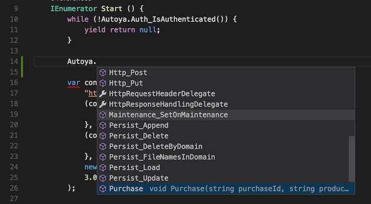

Autoyaのドキュメント
概要
書く。
Autoya
https://github.com/sassembla/Autoya
何
Unityを使って5秒で認証付きゲームを作り始められるようにするためのフレームワーク。
いろんな機能が入ってるが、それらを使うための準備にかかる時間が限りなく短い、というのを目指している。
ぶっちゃけ何の設定変更もせずに、プレイヤーのidentityを持たせた状態でゲーム開始ができる。
基礎的な構造
Autoyaという名前のstatic instanceをインターフェースとした、いろいろな便利機能の集合体になっている。
コアとなるのはAuthentication(認証)処理で、ゲーム起動時に勝手に認証処理をバックグラウンドで開始、
認証完了したら、その認証情報を入れた通信などが可能になる。
依存の図
Backyardフォルダにある機能がAutoyaとしての処理を行うコードがある場所になっており、
Backyard以外のフォルダの機能はそれぞれ単体で使用することができる。
Autoya/
Backyard/
Authentication <- 他の機能の組み合わせで実装されている、Autoyaのコア部分
other..
AssetBundles/
ListDownloader <- Autoyaに依存しない、各機能の実装
Preloader
Loader
Connections/
HTTP
Purchase/
PurchaseRouter
other..
例えば、「認証処理なしで、適当な外部サービスと通信をしたい」という場合には、Connections/HTTPをAutoya経由でなく勝手にnewして使えばいいし、
課金処理だけを使いたい、という場合はPurchase/PurchaseRouterだけを持ち出せばいい、という感じに使える。
便利なアクセッサとしてのAutoya
AutoyaのBackyardが提供する機能は、すべて
Autoya.(ドット)
と書き始めることで、ゲーム中のどのような場所からでも使用できるようになっている。
こんな感じに補完候補が出る。

ここで使用できる機能は、通信系であればもれなく認証がついた状態で行われる。
課金処理なども同様に、通信に関しては全て認証がついたりする。
カスタマイザブル
認証処理やメンテナンスの検知など、Backyardが提供する機能は、Autoya/Backyard/OverridePoint.cs というファイルを更新することで挙動の内容を変更することができる。
特定のタイミングで着火されるハンドラを提供していて、認証フローの要所要所での保存内容やバリデーションや暗号化、サーバがメンテになってる時はこんなコードを返す、
というようなカスタマイズができるようになっている。
抜粋するとこんな感じ。
OverridePoints.cs
/**
modify this class for your app's authentication, purchase dataflow.
*/
namespace AutoyaFramework {
public partial class Autoya {
/**
return if server is under maintenance or not.
*/
private bool IsUnderMaintenance (int httpCode, Dictionary<string, string> responseHeader) {
return httpCode == BackyardSettings.MAINTENANCE_CODE; // どんなhttp response code / response header が来たらメンテナンス画面を出すか
}
/**
return true if already authenticated, return false if not.
you can load your authenticated data (kind of Token) here.
*/
private bool IsFirstBoot () {// どんな条件だったら、初回起動と見なすか
var tokenCandidatePaths = _autoyaFilePersistence.FileNamesInDomain(AuthSettings.AUTH_STORED_FRAMEWORK_DOMAIN);
var isFirstBoot = tokenCandidatePaths.Length == 0;
if (!isFirstBoot) {
// load saved data and hold it for after use.
return false;
}
return true;
}
/**
send authentication data to server at first boot.
*/
private IEnumerator OnBootAuthRequest (Action<Dictionary<string, string>, string> setHeaderAndDataToRequest) {// 初回起動リクエスト時、サーバに何をどんな風に送るか
// set boot body data for Http.Post to server.(if empty, this framework use Http.Get for sending data to server.)
var data = "some boot data";
// set boot authentication header.
var bootKey = AuthSettings.AUTH_BOOT;
var base64Str = Base64.FromBytes(bootKey);
var bootRequestHeader = new Dictionary<string, string> {
{"Authorization", base64Str}
};
setHeaderAndDataToRequest(bootRequestHeader, data);
yield break;
}
/**
received first boot authentication result.
if failed to validate response, call bootAuthFailed(int errorCode, string reason).
this bootAuthFailed method raises the notification against Autoya.Auth_SetOnBootAuthFailed() handler.
*/
private IEnumerator OnBootAuthResponse (Dictionary<string, string> responseHeader, string data, Action<int, string> bootAuthFailed) {
var isValidResponse = true;// 初回起動レスポンスを受け取った時、どんなチェックをおこなって正しかったらどうするか(ファイルを保存する、どこかに通信する、 etc、、
if (isValidResponse) {
Autoya.Persist_Update(AuthSettings.AUTH_STORED_FRAMEWORK_DOMAIN, AuthSettings.AUTH_STORED_TOKEN_FILENAME, data);
} else {
bootAuthFailed(-1, "failed to boot validation.");
}
yield break;
}
全体はこんな感じ。
https://github.com/sassembla/Autoya/blob/master/Assets/Autoya/Backyard/OverridePoints.cs
大まかな認証フローやそれに関連するハンドラは全てこのファイルに定義されていて、それらにどんなパラメータをどう暗号化して入れるか、などを自在にできるようにしてみた。
設定
const的な設定ファイルは、すべてAutoya/Settings フォルダ以下にある。
https://github.com/sassembla/Autoya/tree/master/Assets/Autoya/Settings
認証フロー
初回起動時のサーバへの通信と、それ以降のtokenを使った通信をサポートしている。
JWTなんかも入っているので、暗号化したりシグニチャ作ってサーバで検証したり、とかも楽に導入できる(楽にセキュアにうまくいくかどうかは知らない。
OverridePointsが対応するフロー図を書く。